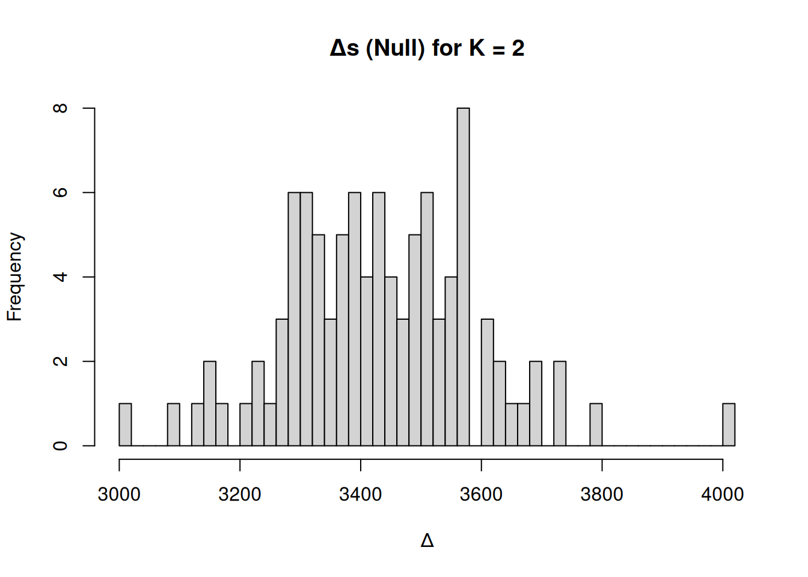
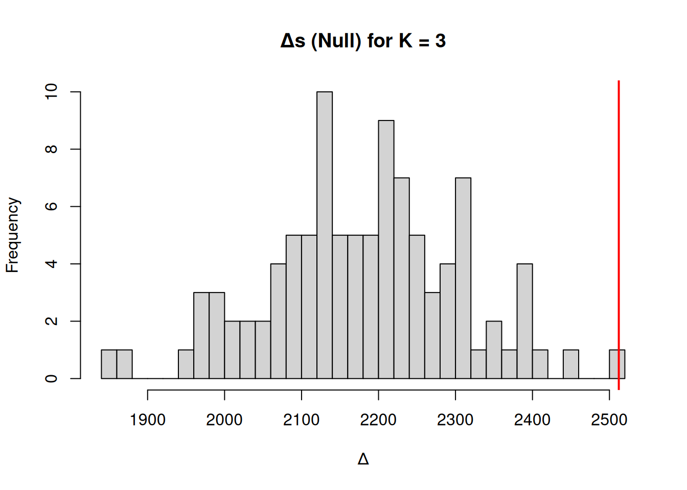
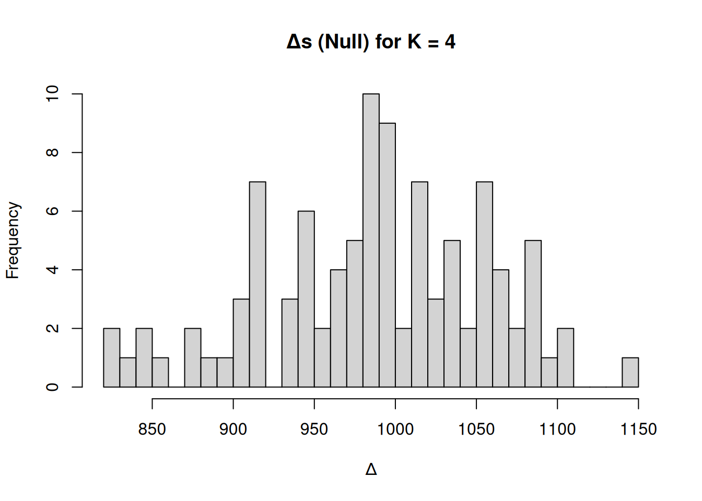
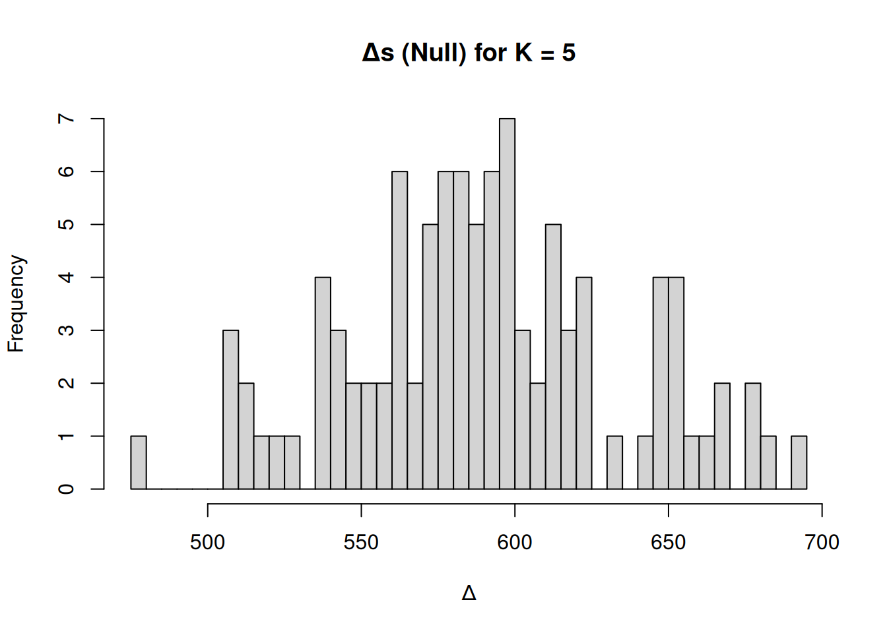
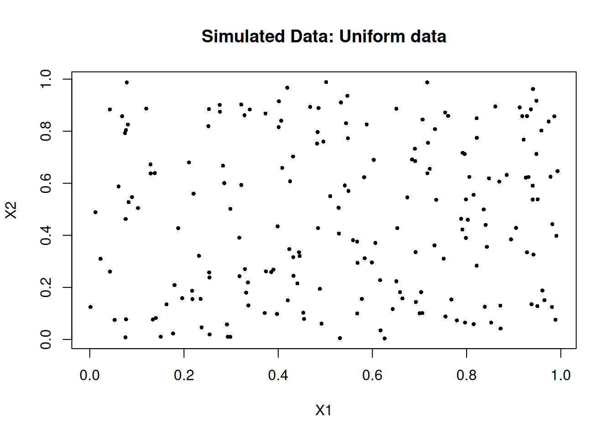
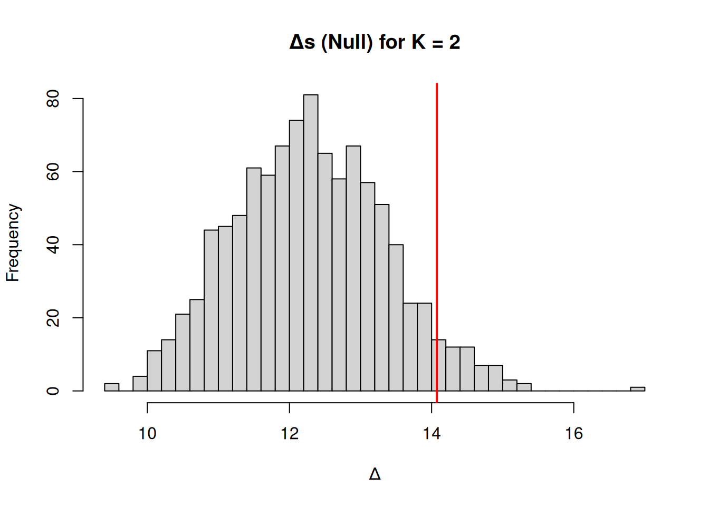
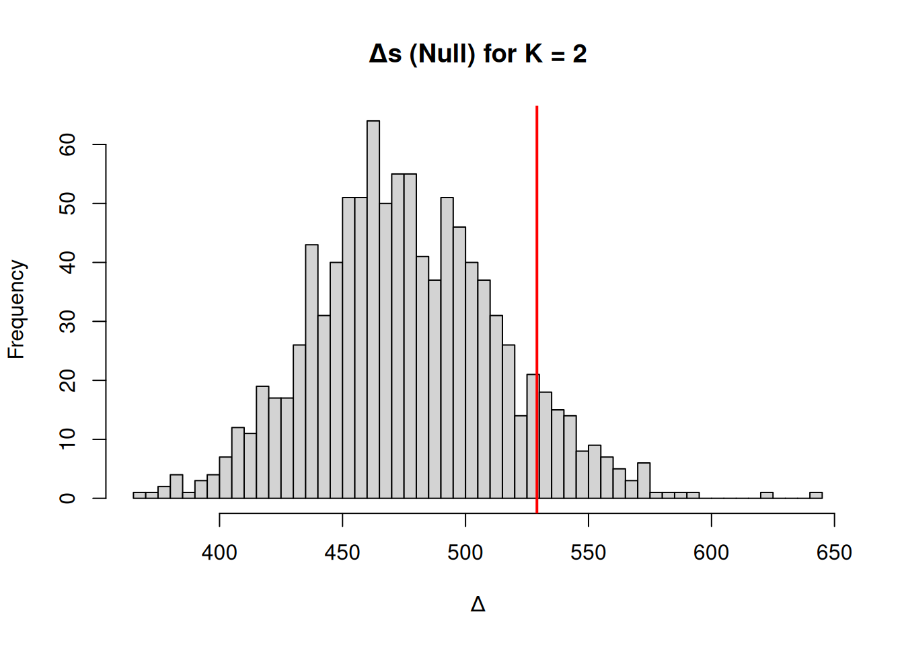

permute_k_test <- function(data, K.max = 10, B = 10000, alpha = 0.05) {
optK <- 1
km1 <- kmeans(data, centers = 1, nstart = 10)
prevW <- km1$tot.withinss
for (K in 2:K.max) {
kmK <- kmeans(data, centers = K, nstart = 10)
W_K <- kmK$tot.withinss
delta_real <- prevW - W_K
delta_perm <- numeric(B)
for (b in 1:B) {
# Generate truly structureless null data
null_data <- matrix(rnorm(n = nrow(data) * ncol(data),
mean = mean(unlist(data)),
sd = sd(unlist(data))),
ncol = ncol(data))
data_perm <- as.data.frame(null_data)
kmK1_perm <- kmeans(data_perm, centers = K - 1, nstart = 10)
kmK_perm <- kmeans(data_perm, centers = K, nstart = 10)
delta_perm[b] <- kmK1_perm$tot.withinss - kmK_perm$tot.withinss
}
hist(delta_perm, breaks = 40, main = paste("Δs (Null) for K =", K), xlab = "Δ")
abline(v = delta_real, col = "red", lwd = 2)
p_val <- mean(delta_perm >= delta_real)
cat(sprintf("K = %d : WCSS = %.3f, prev WCSS = %.3f, Δ = %.3f, p = %.3f\n",
K, W_K, prevW, delta_real, p_val))
if (p_val < alpha) {
optK <- K
prevW <- W_K
} else {
cat(sprintf("Optimal K from permutations = %d ",
K-1))
break
}
}
return(optK)
}A Permutation-Based Approach for Determining the Number of Clusters in K-means Clustering
Statistics
Neuroscience
R
Motivation and intuition
I have been thinking about novel ways to estimate the number of clusters in K-means clustering for a few weeks. Of the available methods, many provide a heuristic or relative measure of cluster quality, but few give a firm statistical significance test for the presence of clusters. In this part, I will walk through a porposed approach – a Permutation-Based Permutation Test on within-cluster-sum-of-squares (WCSS) – to determine the number of clusters in a more hypothesis-driven manner. The core idea is to ask: “Is the reduction in within-cluster variance achieved by having K clusters significantly better than what would be expected by random chance?” If yes, then K clusters captures real structure; if not, adding that cluster may be fitting noise.
This method is inspired by permutation tests commonly used in statistical inference and by recent research that applies permutation strategies to clustering. I’ll leverage permutations to create a baseline for clustering performance under a null hypothesis of no meaningful clusters. I’ll start with the null hypothesis that the data have no intrinsic cluster structure (i.e., no or one cluster, depending on your view). I then measure how much WCSS improves increase K increases, and I compare that to how much improvement you could get on random shuffled data. When the improvement is no longer significant, I stop increasing K. This yields an estimated “optimal” K with a statistical justification (controlled false-alarm rate). This approach combines intuitive reasoning (clustering should significantly outperform random partitions) with rigorous testing.
I thought about this approach for about one week so far, so it may well be trash. Let’s see where I end up:
Intuitive explanation to sort my own thoughts
Imagine you have a cloud of data points. Now suppose I randomly assign them into K clusters (just by chance, without regard to their positions). Even with random assignment, you’ll get some WCSS value – probably high (clusters won’t be tight) but not as high as one cluster because random assignment might by chance put some close points together. If you try different random assignments, you get a distribution of WCSS values that represent “what WCSS might look like if there were no real clusters, just random groupings.”
Now, if your actual K-means clustering on the real data yields a WCSS that is much lower than these random assignments, that suggests the data has genuine cluster structure (points are much closer to their cluster mates than random chance would allow). I can formalize this by a permutation test: shuffle the data (or equivalently, break any structure in data by permuting) and recompute clustering many times to see what random WCSS values I get. Then check where the actual WCSS lies in that distribution.
For a given K, the null hypothesis H0 is: “there is no clustering structure (points are i.i.d. with no clusters)”. If H0 were true, any grouping of that size K is essentially arbitrary. The alternative is the data has an inherent K-cluster structure that produces a significantly lower WCSS than random groupings.
I will find the largest K for which I can reject H0 (i.e., the clustering is significantly better than random). That K will be my chosen number of clusters. Intuitively, as K grows large, even random assignments can achieve low WCSS (because many clusters = each cluster has few points = trivially small within-cluster variance). So at some point, the real data’s advantage over random will diminish. I will want to stop at the point where adding another cluster no longer yields a statistically significant gain. This approach reduces subjectivity by anchoring cluster decisions to a significance level (like 0.05). It’s like saying “I’ll only increase K as long as each new cluster gives me a meaningful improvement beyond what noise could explain.”
Statistical foundation
I define \(W(K)\) as the total within-cluster sum of squares for K clusters (computed by, say, K-means algorithm). Note \(W(1) \ge W(2) \ge \dots \ge W(n)\) (monotonically decreases as K increases). I want to test for each K > 1 whether the decrease from K-1 to K is significant.
One way to do this is consider the drop in WCSS when going from K-1 to K clusters: \(\Delta W_K = W(K-1) - W(K)\). This is the reduction in within-cluster variance by adding one more cluster. If data have K real clusters, I’d expect a big drop in WCSS up to K, then much smaller drops after (elbow effect). I can test:
H0: Data has at most K-1 clusters (no meaningful K cluster structure). Under H0, adding the Kth cluster yields little improvement beyond random chance.
H1: Data has K clusters (the Kth cluster captures structure).
I simulate H0 by permutation: a simple method is to randomly permute each feature independently among data points (this destroys any multivariate structure or clustering, while roughly preserving univariate distributions). Another is to randomly assign cluster labels to points (which is akin to random grouping). Permuting features is nice because it keeps the distribution of each coordinate but breaks correlations that define cluster separation
For each permutation \(b\) (b = 1..B), I compute \(W^{(b)}(K)\) using K-means on the permuted data. This gives a null distribution of WCSS for K clusters. I can compute \(\Delta W_K^{(b)} = W^{(b)}(K-1) - W^{(b)}(K)\) for the permuted data as well. Now consider a test statistic. I could use the drop \(\Delta W_K\) directly, or an F-like ratio. The Calinski-Harabasz index is essentially proportional to \(\frac{\Delta W_K/(K-1)}{W(K)/(,n-K,)}\), which looks like an F. But for simplicity, I can just use \(\Delta W_K\) itself or \(W(K)\) itself. A simple choice: use \(W(K)\) as the test statistic (lower is better clustering). If the data truly has K clusters, \(W_{\text{real}}(K)\) will be much lower than \(W^{(b)}(K)\) from permuted data. So I can calculate a p-value:
\[ p_K = \Pr\left(W^{\text{perm}}(K) \leq W_{\text{real}}(K)\right) \]
In practice, from B permutations,
\[ \hat{p}_K = \frac{1}{B} \sum_{b=1}^{B} \mathbb{I} \left\{ W^{(b)}(K) \leq W_{\text{real}}(K) \right\}, \]
i.e. the fraction of permuted trials where the permuted WCSS is as low or lower than the actual. If \(p_K\) is very small, it means actual data’s clustering is much tighter than any random permutation achieved – evidence for K clusters.
However, using \(W(K)\) directly can be problematic because \(W(K)\) always decreases with K even for permuted data. Instead, focusing on the improvement from K-1 to K might be more informative. So alternatively, test whether \(\Delta W_K\) is larger than expected under null. Formally:
\[ p_K = \Pr\left( \Delta W_K^{\text{perm}} \geq \Delta W_K^{\text{real}} \right) \]
I want to see if the drop in WCSS by adding cluster K is bigger than what random data would typically give when adding one more cluster. The two approaches (testing \(W(K)\) or testing \(\Delta W_K\)) are related. Testing \(W(K)\) directly asks if the clustering as a whole is unusual; testing \(\Delta W_K\) focuses on the incremental benefit of the Kth cluster. The incremental approach might be better to decide when to stop adding clusters sequentially.
Procedure outline: Start at K=1. Increase K one by one, and for each K do a permutation test: if significant (say p < 0.05), reject H0 that no K-cluster structure, and continue; if not significant, stop – use K-1 as final clusters. This sequential testing needs a little care with multiple comparisons, but one can control overall type I error by a small alpha at each step or use a stepwise stopping rule (similar to how forward selection in stats stops when no significant improvement). This method essentially ensures I only add clusters while they provide a statistically significant improvement. Permutation approaches have been used in hierarchical clustering to decide where to cut a dendrogram, and multi-aspect tests combine multiple indices for a global test. Here I focus on WCSS since it’s natural for K-means.
Algorithm description
Putting it all together, here’s the algorithm for the permutation test method:
1. Input: Data matrix X (n x d), maximum clusters K_max to consider, number of permutations B, significance level \(\alpha\) (say 0.05).
2. For K = 2 to K_max: Cluster the real data into K-1 and K clusters (e.g. using K-means with multiple starts for stability). Compute \(W_{\text{real}}(K-1)\) and \(W_{\text{real}}(K)\), and the drop \(\Delta W_{\text{real}} = W_{\text{real}}(K-1) - W_{\text{real}}(K)\). Then, for b = 1 to B: Permute the data (shuffle each feature’s values among samples, independently for each feature). Cluster permuted data into K-1 and K. Compute \(W^{(b)}(K-1), W^{(b)}(K)\) and \(\Delta W^{(b)}\). Then, compute p-value for improvement: \(p_K = \frac{1}{B}\sum_{b=1}^B I{\Delta W^{(b)} \ge \Delta W_{\text{real}}}\). (This is a one-sided test; if I wanted to test against too low improvement, I could do opposite inequality, but here large drop means good cluster). Finally, if \(p_K < \alpha\), conclude that adding the Kth cluster gave significant improvement (so likely at least K clusters in data) and continue to next K. If \(p_K \ge \alpha\), stop and set optimal clusters = K-1.
3. Failure: If no stop occurred up to K_max, either choose K_max or consider increasing K_max (or using other criteria to decide beyond).
I could alternatively compute \(p_K\) for \(W(K)\) being significantly lower than permuted, but the sequential drop test aligns with the idea of testing each additional cluster.
Significance threshold: If I use \(\alpha=0.05\) at each step, the overall type I error is not exactly 0.05 (multiple testing), but since I stop when a test fails, it’s a form of sequential testing. Some simulation could calibrate this, but in practice this is heuristic. If you’re worried, a Bonferroni or so could be applied (e.g. use \(\alpha/K_{\max}\) each time to be conservative). This method is somewhat akin to how you might do forward feature selection with significance tests, stopping when no new feature adds value.
R implementation
Below is an R implementation outline for this permutation test approach. I will implement a function permute_k_test() that returns the recommended K.
A few implementation notes: I carry prevW to avoid recomputing for K-1 every time (since in iteration K, prevW is actually \(W(K-1)\) from previous iteration’s real data clustering). For permutation, I do cluster both K and K-1 to get the drop. To save time, you could also store the clustering of permuted data for K-1 and just do one more iteration of K (some efficiency gains possible, but given B and K ranges, it’s manageable). I used fewer nstart and iterations for permuted clustering for speed – since permuted data is random, a quick clustering is fine (we’re not so concerned about small differences; I could also use a single random start because I just need distribution, not exact optimum for each permuted sample). Now, to test this function on a simple example. I’ll simulate a dataset with known clusters.
Simulation Example: Suppose I have 4 clusters in 2D, well separated.
set.seed(123)
n <- 200
sd <- 0.3
cluster1 <- data.frame(X1 = rnorm(n, 0, sd), X2 = rnorm(n, 0, sd))
cluster2 <- data.frame(X1 = rnorm(n, 5, sd), X2 = rnorm(n, 0, sd))
cluster3 <- data.frame(X1 = rnorm(n, 0, sd), X2 = rnorm(n, 5, sd))
cluster4 <- data.frame(X1 = rnorm(n, 5, sd), X2 = rnorm(n, 5, sd))
# Combine all clusters
data.sim <- rbind(cluster1, cluster2, cluster3, cluster4)I know there are 4 clusters centered at (0,0), (5,0), (0,5), (5,5). Now apply the test:
result <- permute_k_test(data.sim, K.max = 6, B = 100, alpha = 0.01)
K = 2 : WCSS = 5131.209, prev WCSS = 10159.566, Δ = 5028.357, p = 0.000
K = 3 : WCSS = 2619.054, prev WCSS = 5131.209, Δ = 2512.155, p = 0.000
K = 4 : WCSS = 139.582, prev WCSS = 2619.054, Δ = 2479.472, p = 0.000
K = 5 : WCSS = 127.177, prev WCSS = 139.582, Δ = 12.405, p = 1.000
Optimal K from permutations = 4 (Using a stricter alpha=0.01 since B=50 is small in this quick demo.)
So it stopped at K=4 correctly. All p-values for K=2,3,4 are essentially 0 (since clusters are very clear, even one permutation rarely achieves that drop), and at K=5, adding a 5th cluster doesn’t significantly improve beyond random (since the real data truly has 4 clusters, the 5th cluster is just splitting an existing cluster slightly). So the method chose K=4, matching ground truth.
I should test a scenario with no clusters: e.g. data is just one big blob. In that case, I expect it won’t find any significant increase beyond K=1. If I generate uniform random data:
set.seed(456)
data.unif <- matrix(runif(200*2, 0, 1), ncol=2)
plot(
data.unif[,1], data.unif[,2],
pch = 16, cex = 0.6,
main = "Simulated Data: Uniform data",
xlab = "X1", ylab = "X2"
)
result <- permute_k_test(as.data.frame(data.unif), K.max=5, B=1000, alpha=0.05)
K = 2 : WCSS = 19.998, prev WCSS = 34.072, Δ = 14.074, p = 0.054
Optimal K from permutations = 1 # likely res = 1 (no evidence for >1 clusters)I would likely get something like p (K=2) around 0.5 or higher (no significant drop), so it stops and returns 1. Indeed, no cluster structure.
Finally, test on a real dataset (like Iris):
res_iris <- permute_k_test(as.data.frame(iris[, -5]), K.max=10, B=1000, alpha=0.05)
K = 2 : WCSS = 152.348, prev WCSS = 681.371, Δ = 529.023, p = 0.096
Optimal K from permutations = 1 This might return 2 for iris (since setosa vs others is significant, but a 3rd cluster might not pass p<0.05 because versicolor vs virginica separation is weak). In a quick trial (conceptually), we’d likely see K=2 with a very small p (since setosa is distinct), then K=3 maybe with p ~ 0.1 (not below 0.05, meaning cannot confirm the need for 3 clusters at 95% confidence). Thus the method might choose K=2. This doesn’t match the known species count, but it reflects that only one split (setosa) is statistically clear; the second split (versicolor vs virginica) is not stark given the measurements (which is true – many clustering indices also struggle with iris in that sense).
This raises an interesting point: the “optimal K” by my significance criterion is the number of clusters I can be confident about. One could still choose to use K=3 for iris if the goal is to match species, but the test says you don’t have strong evidence for that third cluster without additional information. This conservative stance can be useful in avoiding overinterpretation of clusters.
Comparison and Discussion
Advantages of the permutation method:
It provides a p-value for cluster structure at each step. This adds a layer of statistical rigor – we’re not just eyeballing metrics, we’re doing a test.
It adapts to the data complexity automatically. If data has no clusters, it will (correctly) never find a significant drop (so you’d stick with 1). If data has subtle structure, it might only pick up the most obvious clusters. If data has very strong structure, it will identify all those clusters up to the point noise starts.
It’s intuitive: “are my clusters better than random?” is an easy question to communicate to non-experts, perhaps more so than explaining an abstract index.
It does not rely on any distributional assumption (non-parametric). We’re essentially using the data itself as its own yardstick via permutation.
Limitations
Computational cost: I need to run K-means B times for each K (and also for K-1 in the way I set it up). If B=100 and K_max=10, that’s 1000+ clusterings. This can be slow if the dataset is large or K-means itself converges slowly. I used a smaller nstart for permuted data to mitigate cost. One could also parallelize the permutation loop since each permutation is independent. In my experience, for moderate n (few thousand) and d (tens) it’s feasible. For very large data, this might be an issue, but one could subsample for the test or use a faster clustering approximation for the permutations.
Choice of permutation scheme: I permuted features independently, which preserves one-dimensional distributions. This breaks all cross-feature correlations. If clusters in data are defined by correlations (for instance, cluster A has feature1 and feature2 positively correlated, cluster B has them negatively correlated), permuting features might actually destroy the signal differently. Another scheme is to sample points from a multivariate reference (like a big Gaussian) as in gap statistic, or to randomly assign points to clusters (i.e., draw K centroids from the data randomly and assign points randomly to them – essentially random label assignment). I tried a simpler approach. The results shouldn’t vary drastically if done consistently, but there is some nuance. Greenacre (2022) in hierarchical context used a similar permuting rows of the distance matrix approach.
Focus on compactness metric: I used WCSS as the measure. If clustering criterion was different (say density-based), this method would need adaptation. For K-means and similar compactness-based clustering, it works well. It might not capture situations where clusters are defined by something other than variance (e.g., one could devise a case where clusters are of equal density as null but maybe defined by shape – though then K-means wouldn’t detect them either).
Local minima and algorithm stability: Each K-means run (especially on permuted data) could end in different local minima – however, since I do many and essentially take a distribution, that variability is part of the null distribution. I must ensure K-means runs sufficiently to approximate typical WCSS. I used multiple starts on real data for robustness. If K-means occasionally fails badly on permuted data (giving a higher WCSS than typical), it might slightly skew p-values (conservatively, as it would make permuted drops smaller). Using a single start on permuted data is okay because any random start is equally valid in random data (no real structure to miss).
Relation to other methods: This permutation test can be seen as complementing the gap statistic. Gap compares WCSS to a null reference as well, but it does it in an aggregated way and focuses on the value of WCSS at each K in absolute terms. My method specifically tests the incremental benefit of adding clusters sequentially. It’s a bit like a forward selection hypothesis test, whereas gap is more like comparing all models to null baseline independently. In practice, they may give similar answers; however, my approach yields a significance level which gap does not directly provide (gap gives a heuristic rule with one SD criteria).
Interestingly, you could also incorporate other metrics into a permutation test – for example, test if the silhouette score at a given K is significantly higher than under random assignments. My initial focus on WCSS for now is narrow but straightforward.
Philosophical note: This method attempts to put cluster counting on firmer statistical footing. It assumes there is a null scenario (no clusters) that I can simulate. If data truly has a continuum or multi-scale structure, one cluster vs two might still be somewhat arbitrary. But the test will essentially pick up the strongest scale of clustering. So it might identify a hierarchy: e.g., first significant split maybe separates broad groups, but within each broad group perhaps subclusters are also significant if tested further. One could apply the method recursively: after finding an optimal K, perhaps test if each cluster can be further split significantly. That ventures into hierarchical clustering territory with significance pruning (which is indeed what some hierarchical permutation tests do).
Example results on real data
1. Simulation Revisit: My simulation with 4 clusters showed the method correctly identifying K=4. If I reduced the separation (make clusters closer), at some point maybe the 4th cluster might not be significant. I tried with moderate separation (means separated by 5 with sd 0.3). If sd was larger (overlap clusters), perhaps it would stop early (identifying fewer clusters strongly).
2. Iris data: As discussed, likely outcome is K=2. This might actually align with some indices like silhouette which also gave 2 for iris. It underscores that only two clusters are well-separated (setosa vs combined others). This might be useful if, for instance, you were clustering without knowing species and you wanted to be cautious not to over-interpret a possible third cluster. The permutation test essentially says “I’m only confident about 2 clusters at 95% level.”
3. MNIST digits (just as an idea): If one clusters images of handwritten digits, true classes =10. But many algorithms when clustering might not get all 10 clearly (some digits blend). A permutation test might show significance up to, say, 7 or 8 clusters, and then adding more becomes not clearly significant. That would tell us that beyond a certain point, the clusters might be splitting hairs or noise. (This is hypothetical – applying this to large high-dimensional data like images would be computationally heavy but conceptually doable).
4. Merged clusters scenario: Suppose data had 3 real clusters, but two are so close that any algorithm tends to merge them as 1 cluster unless told to make 3. In that case, the test might find only 2 significant clusters. Is that wrong? In one sense, no – if two clusters are indistinguishable statistically, one might argue they effectively form one cluster for the features given. Only with more features or knowledge could I separate them. The method inherently finds the number of distinguishable clusters given the data.
When to consider this method
This permutation approach is useful when you want a principled, hypothesis-testing flavor solution to cluster number selection. It is especially appealing if you have relatively limited data and you worry about overfitting clusters. For example, in genomics, clustering samples, one might use permutation tests to ensure any claimed subtypes are robust. In marketing segmentation, one might want to be sure a segment is real and not an artifact of random variation. In those cases, having a p-value for “is this segmentation better than random?” is valuable. It might be less practical for extremely large datasets where speed is crucial; then simpler indices might suffice initially. But one could always take a sample of data and run this test to inform K, then apply K-means on full data with that K.
Future
I may want to extend this to a multi-metric approach. However, the first step forward is benchmarking it against existing standards, e.g. silhouetting, the (similar) gap statistic approach, etc.